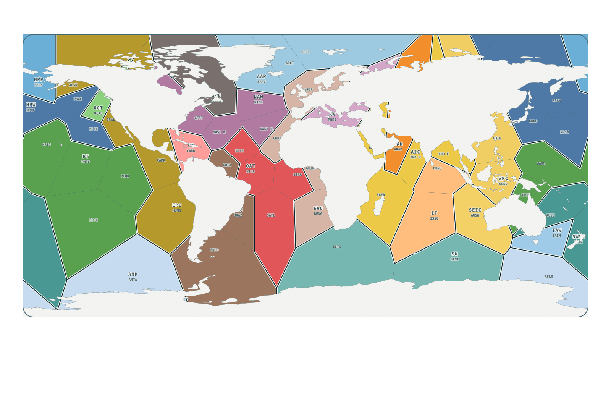

Ocean States of the World · motion records
Ocean motion almanac
Names are useful addresses for moving water. They are not fixed lines on a map. This first ledger separates named current systems from individual, short lived eddies and keeps every reported length tied to its source and scope.
Explore the Indian and Pacific monthly branching cycles.
Research candidate status: this atlas displays the full working source set, including provider-derived records whose public reuse terms remain under review. The separate rights-screened review atlas and data export omit those records and explain their smaller counts. Neither package is a published dataset. See the site boundary audit and source terms audit.
Explore the versioned object pages or download the v0.1.0 release candidate manifest, coverage report, methods, citation draft, and relation table. The package has stable IDs and source-linked evidence classes; it has not yet been published as a cited dataset.
00 / Atlas index
Find a named flow on the map
Pick a point to jump to its almanac record. Points locate a region for reading; they are not measured current paths or eddy tracks. NASA-described structures with a regional locator appear separately from current names. Most named Loop Current rings share one Gulf of Mexico gateway; Berek has a separately published approximate center point.

Named current locator NASA structure locator Gulf of Mexico ring gateway Selected state's dated NOAA eddies 2026-09-25 NAVO operational eddy outline 2026-09-25 partial geostrophic streamline
Dated seed-to-50°W streamline reach: loading…. NOAA labels this source analysis experimental. The frozen-time velocity diagnostic is not a whole-current length, observed axis, or parcel track. Inspect the path and seed sensitivity · NOAA velocity product ↗.
Eddy outlines are simplified for display; state containment uses each full provider polygon. The source ZIP lacks a declared CRS, and provider codes do not identify persistent named eddies. Inspect the pinned source receipt.
North wall: loading… South wall: loading… · Gulf Stream System record · NAVO data via NOAA OPC ↗. These measured lines are dated analyzed surface fronts, not whole-current lengths or NASA movie traces.
Choose a state's detected eddy to see its NOAA weekly center path.
The map uses OSW's province ground and approximate editorial locators. Watch NASA's Perpetual Ocean 2 for modelled motion around the Kuroshio, Agulhas, and Gulf Stream. Each current record links to one of NASA's 70 regional crop movies; a crop's geography alone does not mean NASA named the current.
Taxonomy / v1
One name, several kinds of claim
The broad OSW object registry identifies currents and eddies. This almanac adds independent facets: identity level (family, system, current, segment, individual eddy), geographic setting, time behavior, and evidence. Eddy rotation and core temperature remain unresolved until a dated source establishes them. NOAA's CMECS classifiers and the META4.0 eddy atlas already classify important parts of this problem; OSW connects those ideas to names and atlas navigation.
Loading classified source-set counts…
Download the facet definitions · Download classifications and locators
State × motion
What flows through this OSW state?
Select any of the 56 approximate ocean states. Current relationships separate OSW's drawn schematic lines, published cartographic arrows, editorial sketches, regional locator points, and one dated geostrophic streamline reach. Each state also links directly to NASA movie crops that cover its map region. NOAA contour detections sample 1 March, June, September, and December in each of 2021–2023, approximately between 60°S and 60°N. The three June dates also have seven-day tracks and dated state relations. A separate 2026-09-25 NAVO/NCEI release provides four operationally labeled eddy polygons in three states. These samples are not a continuous inventory. The arrows and movie crops are geographic aids, not measured current boundaries or NASA identified state objects.
Choose a state to inspect its motion evidence.
Download dated local named-current observations · Download the partial geostrophic path · Download dated NAVO eddy/state polygon relations. These observations are separate from the all-pairs current/state map matrix and historical named-eddy identities.
Download all 5,488 current/state decisions · Download all 56 schematic current/state joins · Download 73 arrow and state joins · Published arrow layer and attribution · Download state × NASA movie crop joins · Download the twelve-date NOAA state inventory · NOAA 1–7 June weekly trajectories: 2021, 2022, 2023 · NOAA method
NASA series evidence
Flows and structures NASA names or describes
The 2011 surface visualization and the 2025 Perpetual Ocean 2 releases name a small set of currents and describe additional structures. The 70 NASA crop movies are geographic views of the model, not 70 named objects. Open a NASA eddy class's named-source list to jump to independently named examples; that relation is taxonomy or regional flow context, not a NASA identification of an individual. A regional crop link shows where to look; it does not prove a particular eddy identity or state intersection.
The clip shared in September 2026 appears to be a cropped repost of NASA's February 2025 Perpetual Ocean 2 beauty tour. The match is based on the scene sequence and visual style; NASA's release is the source for object names and claims.
| Object | NASA support and form | OSW join | State evidence | NASA-reported values | NASA sources | NASA movies |
|---|
Reported speed, size, temperature, salinity, depth, lifetime, and relative transport describe different quantities; eddy diameter and transport ratio are not current lengths. Mapped-arrow crop regions use independent historical map symbols as navigation and do not identify a current in NASA's frames. Download the complete 22-object atlas join · Download NASA object and release ledger · Download the 22-object form classification · Download … exact source links · Download source-reported values · Download object–state crosswalk · Download mapped-current crop links · Download object–movie variant decisions · Review object-by-object coverage · Download feature-specific film links · Review the seven-source audit · Download all 70 crop boxes and joins.
Download the complete NASA object × OSW state matrix. Every unlinked pair is marked unresolved; map evidence never asserts a NASA feature footprint.
NASA source atlas
Browse the original movie releases
Open each NASA release to see its source credit, citation, identified objects, supporting passages, and movie files. A movie variant is not another current or eddy. The separate 70 regional crops are indexed by state above.
01 / Current systems
How do published length estimates rank?
Published estimates appear first in descending order. Proposed continuity hypotheses, sampled reaches, and lower bounds are labelled and unranked. A blank length means we have a supported name but no comparable length estimate. A current can split, meander, or change names downstream, so these figures are approximate extents or segment lengths, not exact streamline measurements. The nine ranked claims use different scopes and evidence; the source-passage audit explains the Florida and Gulf Stream segment boundary and the limits of the California and Kuroshio estimates.
| Length rank* | Current | Basin | Identity / setting | Reported length | What was measured | Section / sampled reach | System / sections | NASA relation | Source | Atlas / NASA |
|---|
*Rank applies only to the length estimates in this first source set. It is not a global ranking of every ocean current. A NASA regional movie link shows geography, not NASA identification. Read the nine-claim passage audit and its limits · Download all 99 canonical length assessments · Download the current ledger · Download all length evidence and rank decisions · Audit seven geographic floors and their source gates · Download all current–NASA relation decisions.
Illustrated map spans
A second, provisional ordering measures the longest single arrow drawn for each mapped current. These numbers rank map symbols, not the physical lengths of currents: the arrows can stop early, bend, overlap, or combine flows. Multi-basin family labels are excluded. Use this to prioritize currents for source-backed endpoint or centerline work, not as a longest-current claim.
| Map span rank | Current | Longest drawn arrow | Arrow ID / count | Published length |
|---|
The span proxy is half the geodesic perimeter of each narrowest available arrow polygon; it is not a physical lower bound or confidence interval. The companion polyline layer returned zero records when checked on 29 September 2026. Download methods and all 99 decisions · Source map layer and attribution.
Source reconciliation
Other current names to resolve
The Marine Regions gazetteer lists names under its “Current” place type. This separate inventory preserves all 52 source records: exact or reviewed alias matches to the OSW ledger, names that still need identity and location review, and entries that represent another type of motion. Most records supply no coordinates, so a candidate is not yet an atlas crossing or a length-ranked current. Where a study tests an older name, its evidence and limits appear beside the source record.
| Source name | Review state | OSW current | Source position | Gazetteer source | Record |
|---|
Download all 52 source records and reconciliation decisions. This source is a name index, not an inventory of everything visible in NASA's model.
02 / Individual eddies
Which eddies have names?
Search across the named-eddy source ledgers: Loading…. Paper-sourced Kraken, Thor, and Ursa records are distinct from possible Horizon counterparts. This is the admitted source set, not a global census of every eddy visible in the NASA model.
Download the combined named-eddy inventory. Each entry preserves its source identity, NASA class context, and limits on state and movie claims.
Some ocean eddies are named, especially Loop Current eddies in the Gulf of Mexico. The list below includes primary and secondary eddy names in Horizon Marine's public register. Eight primary rings separated during NASA’s 2021–2023 model years, with four linked secondary names lacking their own separation dates. The source gives no individual ring positions, so the shared OSW state and NASA movie links are Gulf regional context, not identity matches or containment claims.
| Source no. | Name | Role | Initial separation | Linked primary | Atlas |
|---|
The register snapshot is dated —. Its historical “Active” labels are not a current status report. Download all name records · Download name × NASA/state context · Download the 81 source rows · Explore a global trajectory atlas.
Recurring eddy names and dated individuals
Regional names such as Batumi or Haida can refer to eddies recurring near a place. NASA names Agulhas Rings as a class; primary studies individually name Astrid, Laura, Ana, Eliza, and Jeannette. One study treats Jeannette as a continuous track while another splits its history at a merger, so those track labels remain source-specific. NOAA-hosted research names Cuba anticyclones as a Gulf eddy class and independently discusses the 2010 named ring Franklin. A glider study names subsurface Persian Gulf Water patches “peddies,” linked here to NASA’s described overflow. Studied Haida, Sitka, and Kenai eddies are separate records too. Map points are tagged as regional gateways, reported centers, event points, survey transects, or core-water sample stations. A point does not establish a closed footprint or a match to NASA footage. Loading…
| Name | Identity | Basin | Locator | Rotation | OSW state locator | Source | NASA region |
|---|
Download the named eddy geography ledger · Download state and NASA crop joins. This source-specific register is still growing. The Black Sea has no suitable OSW state in the current 56-state map; approximate MEDI and REDS polygon overlaps are excluded.
Seasonal source evidence
Where does the Indian South Equatorial flow branch?
Historical monthly branching latitudes off Madagascar and the Philippines. Select a basin-qualified inventory proposal, source layer and month. Each source retains its own period and latitude axis; these curves do not establish current length, width or a changing geographic route.
Loading checked seasonal evidence…
Graph-reading allowances and source variability are shown separately. Loading checked source scope…
Link to this month and layer · Chen et al. (2014), figure 3 · Proposed current card
| Month | Latitude | Mean reading allowance | Source-labelled standard-deviation band |
|---|